University Girl Magazine
Styled looks for editorial spreads, combining fashion trends, cultural references, and raw creativity.
Scroll for a curated collection of my projects across styling, photography, graphic design, and video. Each section highlights a different part of my creativity, designed to be explored visually.
This section showcases my approach to styling through editorial projects, curated mood boards, and visuals direction. I create lookbooks and concept boards that combine references, textures, and color palettes to set the tone for shoots and events.
Styled looks for editorial spreads, combining fashion trends, cultural references, and raw creativity.
Fashion stylist for features that prioritize authenticity and unpolished edge, working with a creative team to shape each story’s aesthetic.
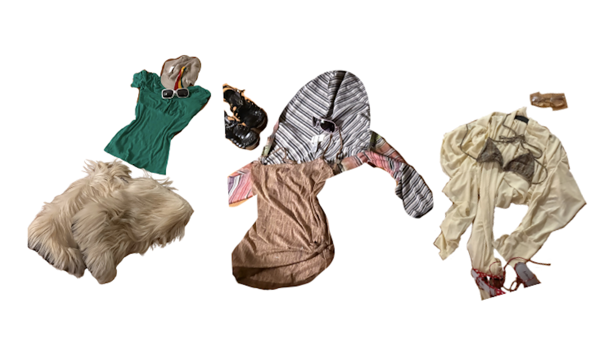Curated collections of images and references that build my styling process, exploring the line between trend and innovation.

Where my aesthetic eye meets storytelling, it’s a personal outlet for me to capture moments, moods, and experiences in their most authentic form. I’m drawn to raw emotion and unfiltered details, creating images that feel lived-in and honest.

 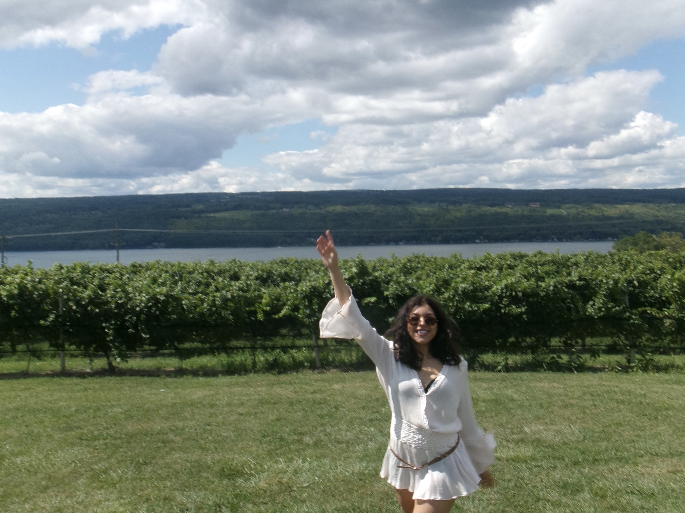
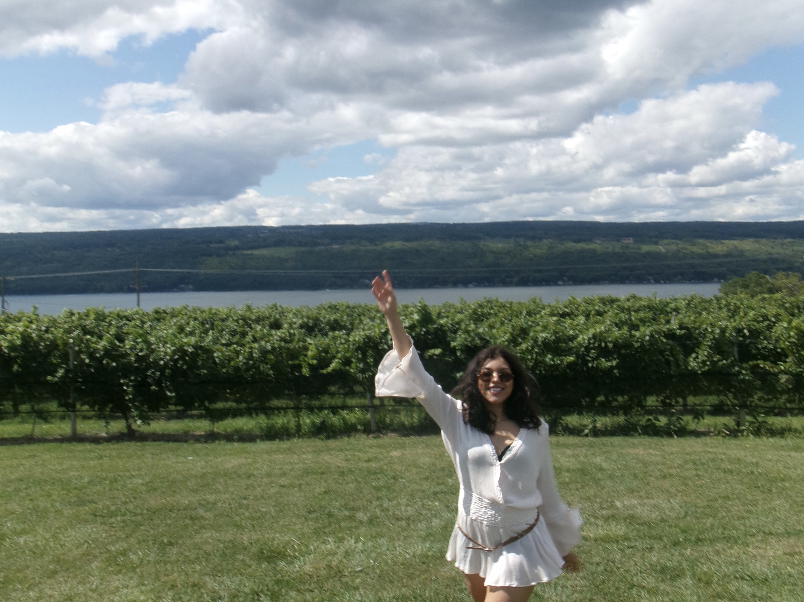


 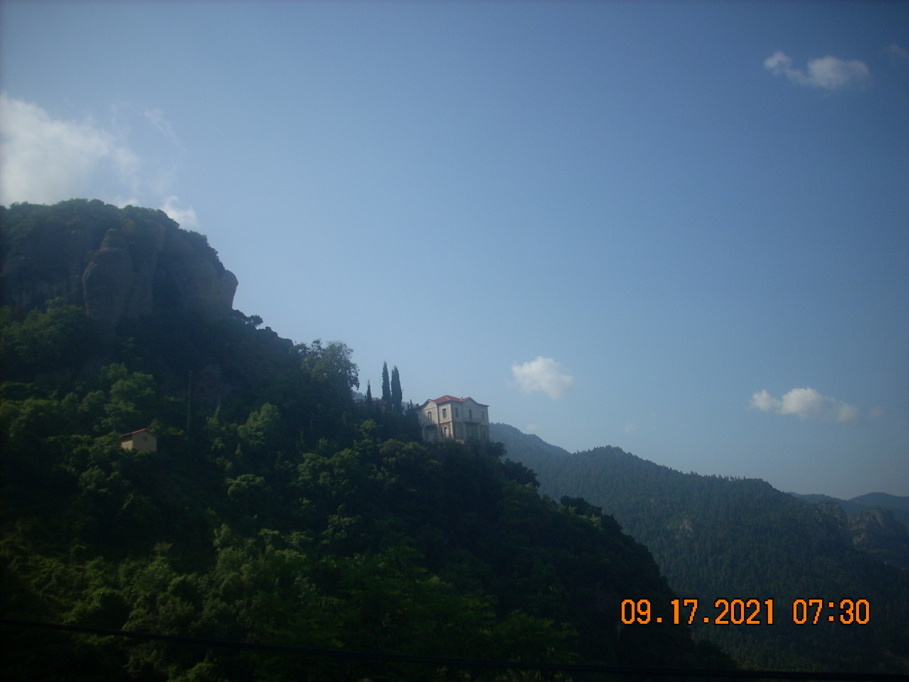
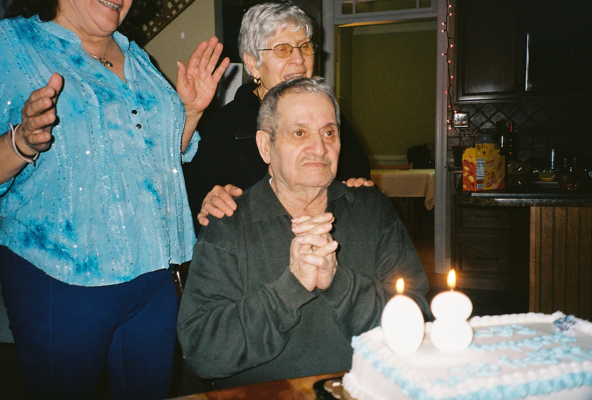
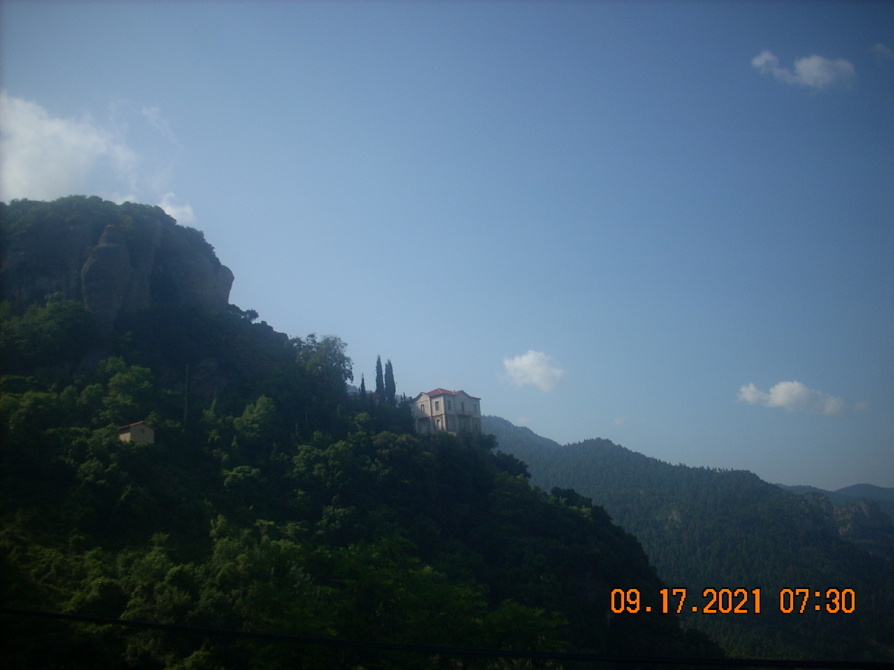
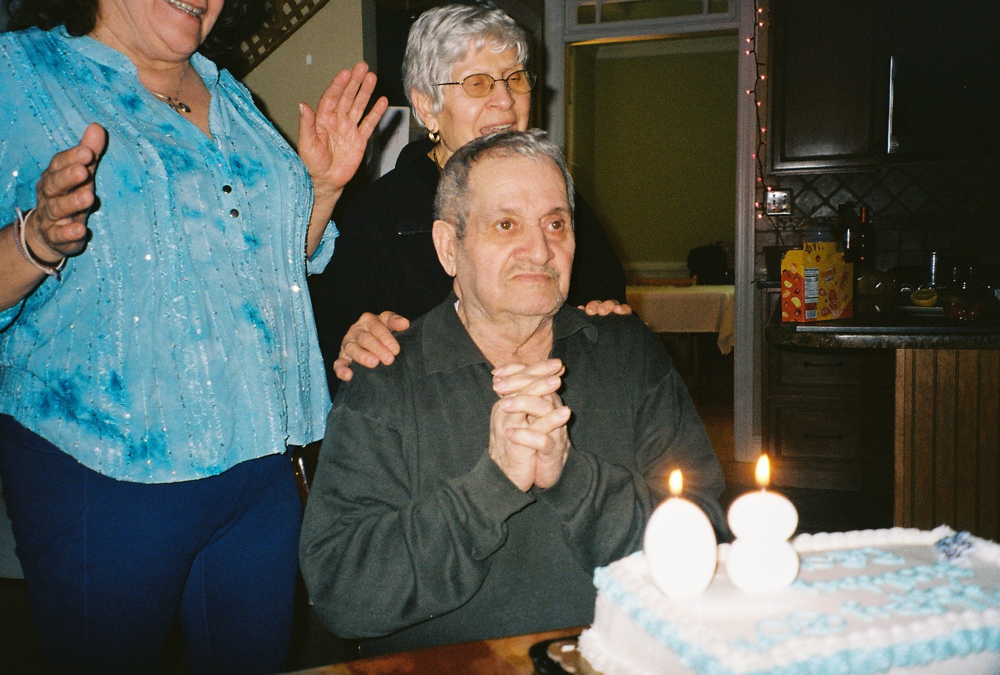
 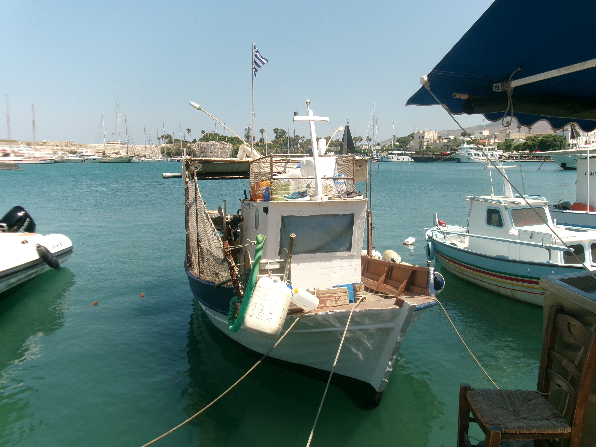
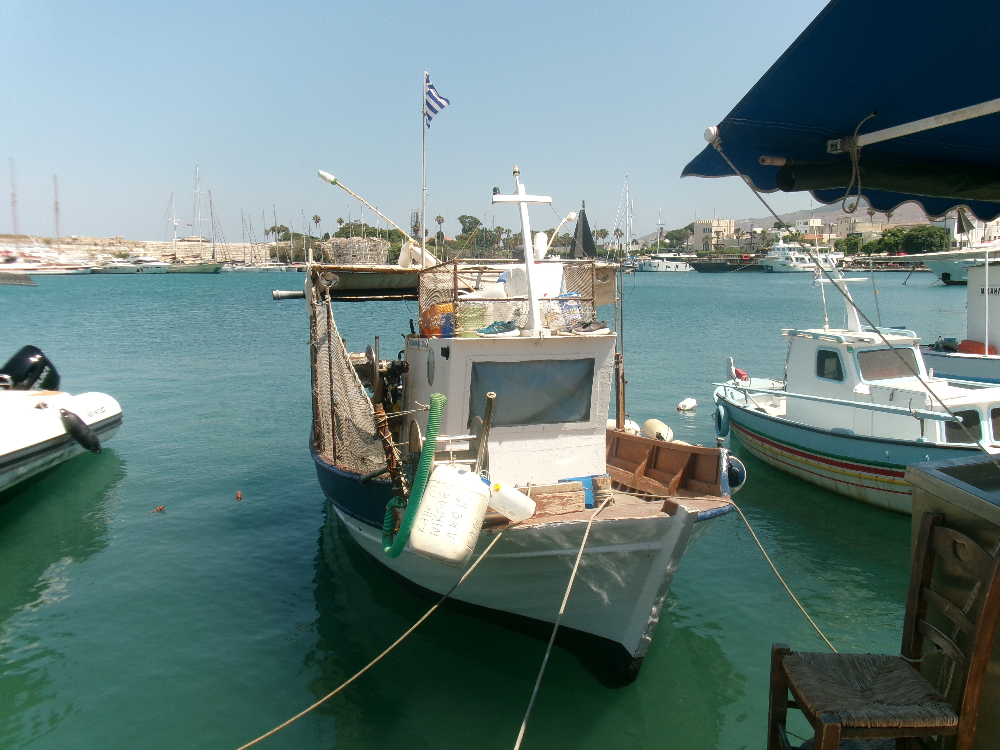


Ongoing photo series that explores everyday moments.
Capturing the energy of live spaces, from events and experiences to behind-the-scenes moments, with an emphasis on atmosphere over perfection.
Visual storytelling projects that blur the line between candid and curated.
My work blends brainstorming and collaging with a bold, editorial sensibility. I approach each project as an opportunity to experiment and practice intentionally. My goal is to create designs that convey a clear mood and make a lasting impact.
Designed promotional graphics and magazine spreads, focusing on balancing written pieces with visual layouts that elevated and complemented the text.
Extras and creative projects, experimenting with color, typography, and mixed media
 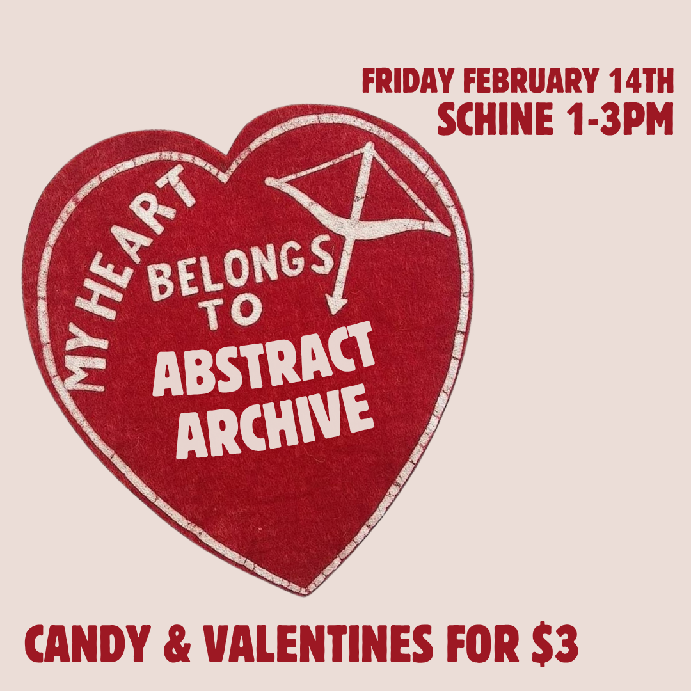
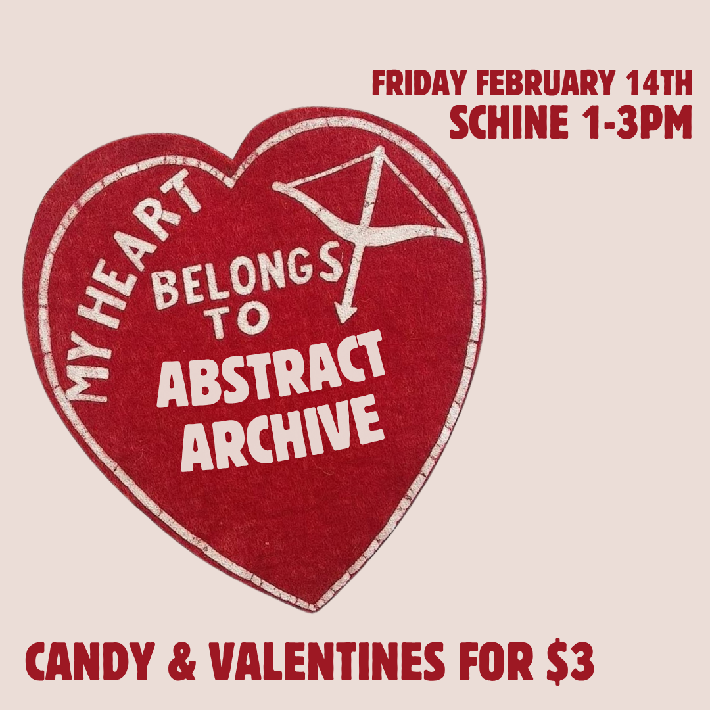

Video is my way of capturing energy and atmosphere in motion. Most of my work in this area is personal, involving short edits or visual experiments that focus on capturing moments rather than polishing them. I’m drawn to documenting live music and creative spaces in their own time, leaning into raw details that bring out the feeling of being there.
Live Music Moments, Visual Experiments. Personal Edits.